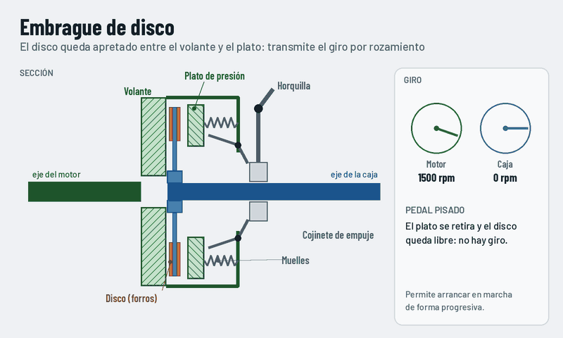

Embrague de disco
Un disco con forros de fricción queda apretado por los muelles entre el volante del motor y el plato de presión. El giro se transmite por rozamiento.

Qué observar
- Con el pedal pisado, el plato se separa y el disco gira libre.
- Al soltar el pedal, el disco patina al principio y va cogiendo velocidad.
- Embragado, todo gira junto.
Características
- Permite arrancar de forma progresiva.
- Puede embragar con los ejes a distinta velocidad.
- Los forros se desgastan con el uso.
Dónde lo encontramos
- Coches y motos.
- Prensas mecánicas y máquinas con volante de inercia.
- Maquinaria agrícola.